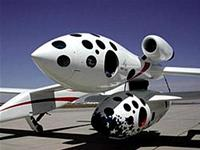

 Tên lửa tư nhân "SpaceShipOne" (Mỹ) vừa được phóng vào vũ trụ lần thứ hai. Sự thành công này có thể mở đường đưa người du lịch lên vũ trụ...
Tên lửa tư nhân đầu tiên thế giới "SpaceShipOne" của Mỹ vừa được phóng vào vũ trụ lần thứ hai trong 7 ngày qua, và giành giải thưởng Ansari X, trị giá 10 triệu USD.
Tin vui này báo hiệu một kỷ nguyên mới về ngành du lịch đưa người lên vũ trụ trong tương lai gần.
Để giành được giải này, theo quy định, mỗi tên lửa tham gia cuộc thi cần thực hiện hai chuyến bay lên không trung trong vòng hai tuần, mang theo trang thiết bị nặng tương đương trọng lượng của hai hành khách.
Trong lần bay thứ hai này, tên lửa SpaceShipOne, có kích cỡ tương đương một chiếc xe tải với phần đầu và phần thân to và ngắn, đã bay gần 90 phút với tốc độ trung bình 3.500km/giờ. SpaceShipOne cũng phá vỡ kỷ lục về bay lên độ cao dưới quỹ đạo, với thành tích 112km.
Thành tích trước đó thuộc về chiếc tên lửa X-15, bay ở độ cao 108 km, lập cách đây 41 năm.
Hồi tuần trước Hãng hàng không Virgin Atlantic thông báo có kế hoạch phối hợp với giới chủ quản của SpaceShipOne để đưa du khách lên vũ trụm với giá khoảng 2000.000USD/chuyến.
Theo TTXVN/VietnamNet